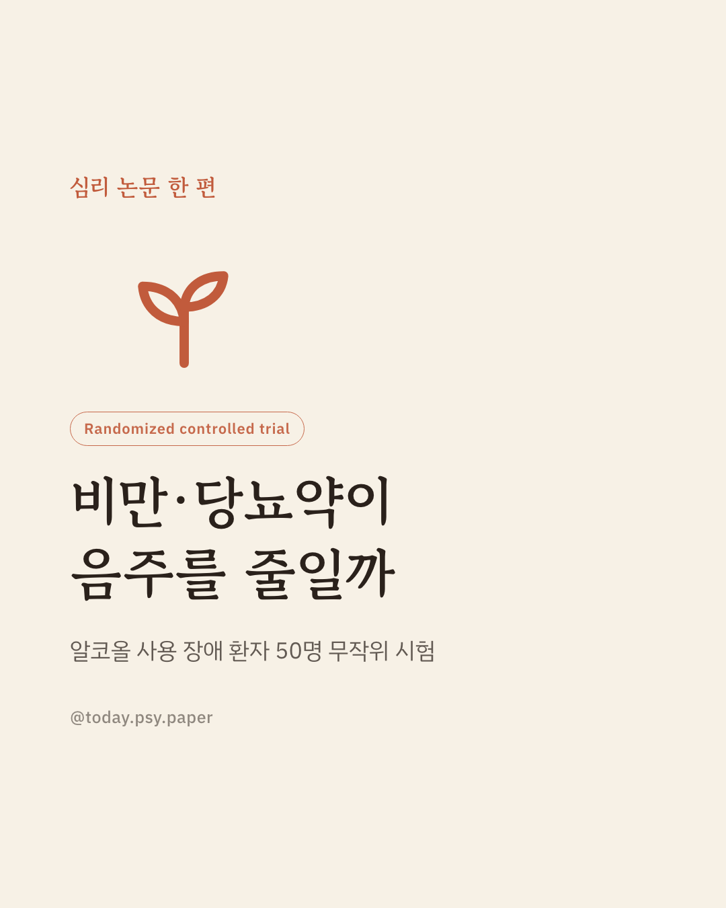
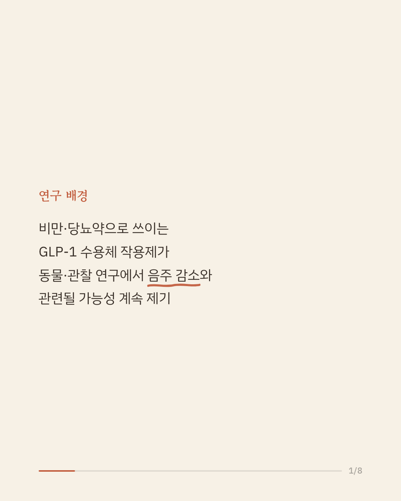
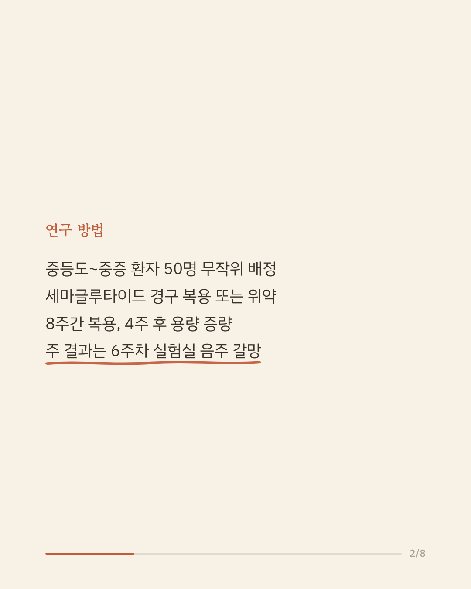
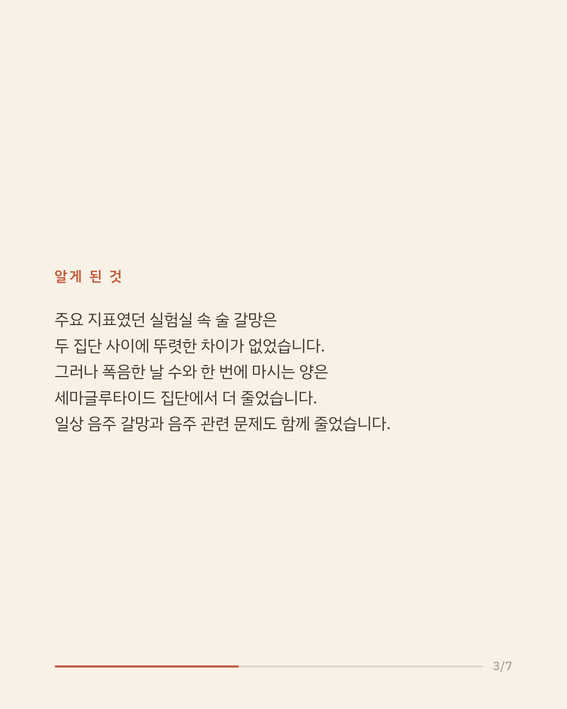
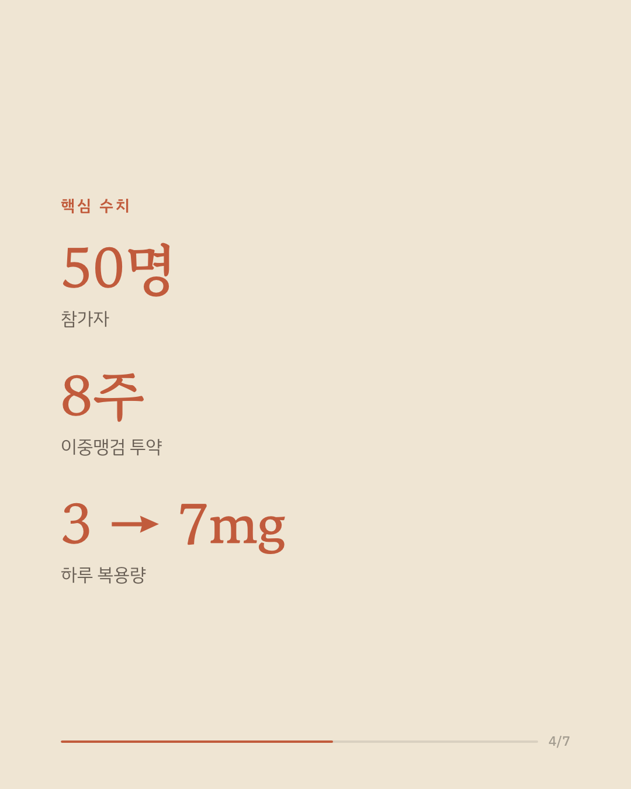
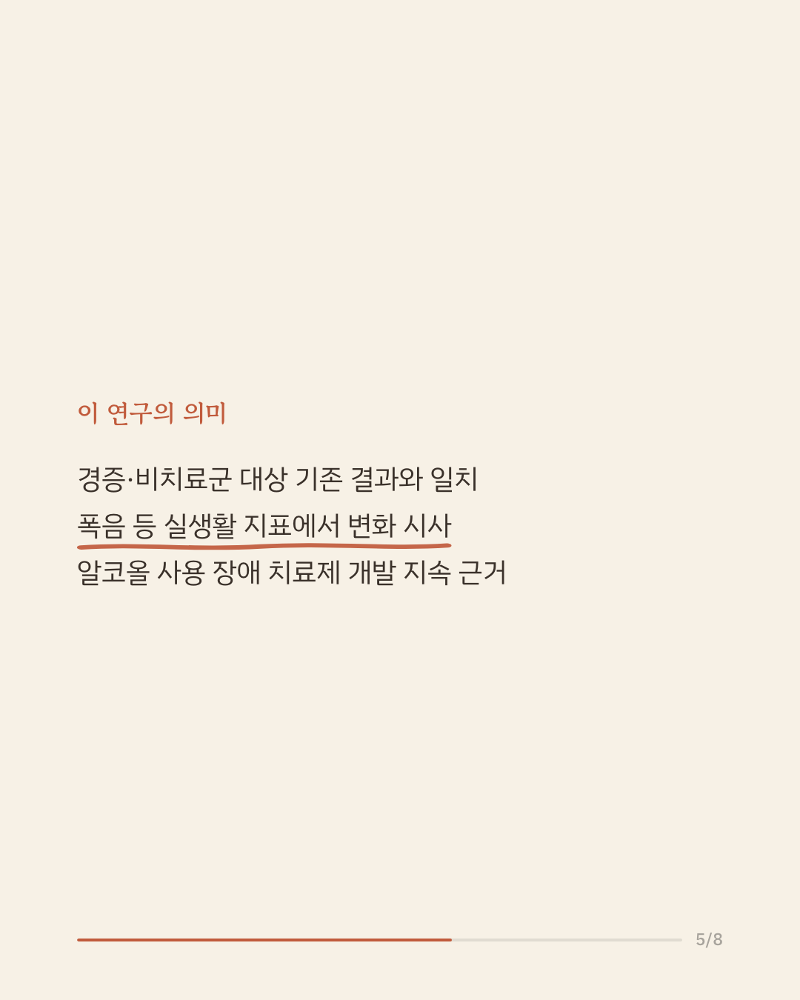
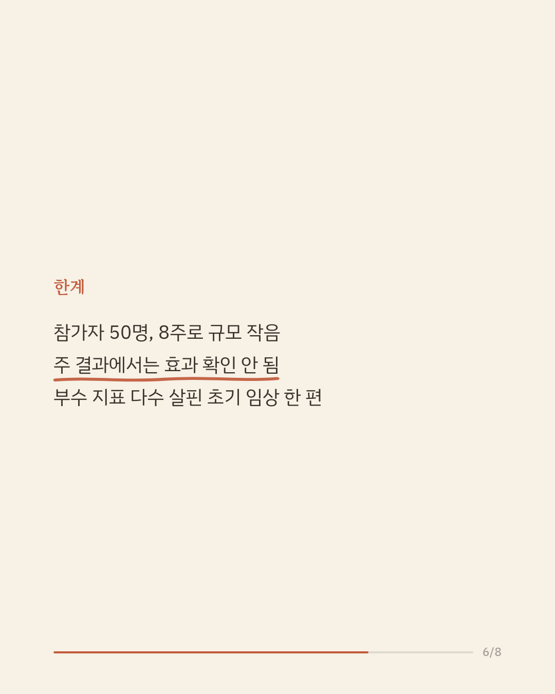
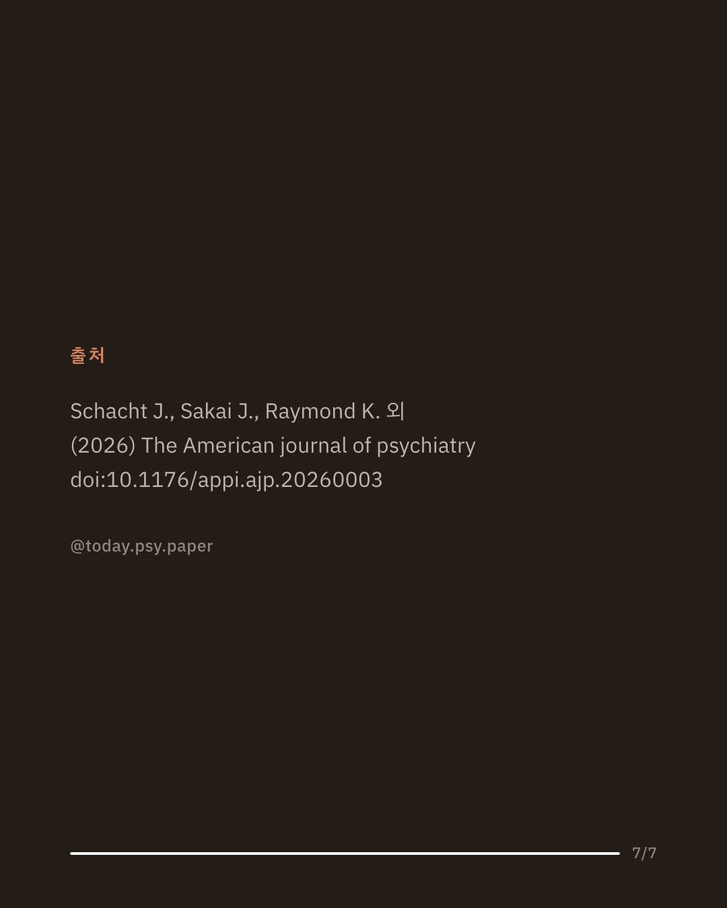

비만과 당뇨 치료에 쓰이는 세마글루타이드가 음주 욕구를 줄일 수 있다는 관찰이 동물 실험과 관찰 연구에서 이어져 왔습니다. 이번 연구는 알코올 사용 장애로 치료를 원하는 성인에게도 이 약이 음주를 줄이는지 확인하려 했습니다. 연구진은 중간 이상 심각도의 알코올 사용 장애가 있는 성인 50명을 세마글루타이드군과 가짜 약군으로 나누어 8주간 이중맹검 방식으로 비교했습니다. 미리 정한 주요 지표였던 실험실에서의 술 신호 유발 갈망과 하루 음주량에서는 두 집단 간에 뚜렷한 차이가 나타나지 않았습니다. 그러나 폭음한 날 수, 한 번 마실 때의 음주량, 일상에서 느끼는 음주 갈망, 음주로 인한 문제, 대마 사용 일수는 세마글루타이드군에서 더 크게 줄었고, 세계보건기구 기준 위험 음주 수준이 한 단계 이상 낮아진 사람도 더 많았습니다. 다만 참가자가 50명으로 적고 투약 기간이 8주로 짧으며, 긍정적 결과가 대부분 이차·탐색 지표에서 나왔다는 점은 한계입니다. 단일 연구이므로 확대 해석은 조심해야 합니다. 출처: Oral Semaglutide for Alcohol Use Disorder: A Randomized Clinical Trial. The American Journal of Psychiatry (2026). #알코올사용장애 #중독치료 #정신건강정보 #임상심리 #세마글루타이드
python3 publish.py 42522065